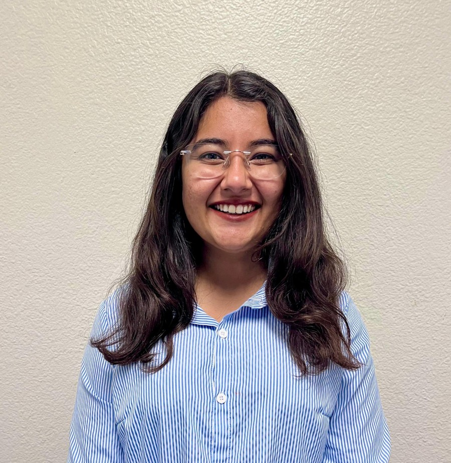

Engineering Management Graduate Student
Accounts Payable Supervisor | Project Coordinator | Junior Project Manager
Engineering Management graduate student with hands-on U.S. experience leading teams and managing high-volume operational workflows. Strong foundation in project planning, work breakdown structures, scheduling, risk management, stakeholder coordination, and process improvement. Proven ability to improve efficiency, maintain compliance, and support data-driven decisions in fast-paced environments.